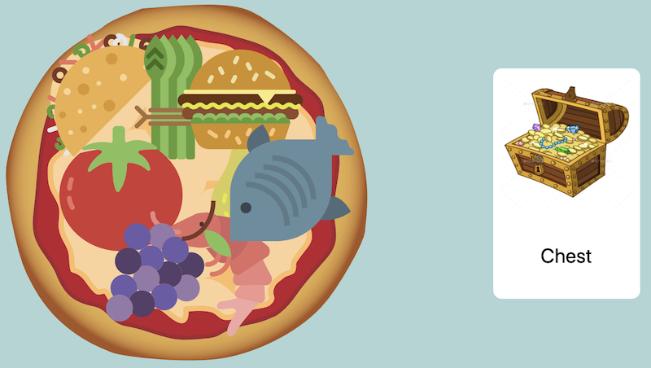
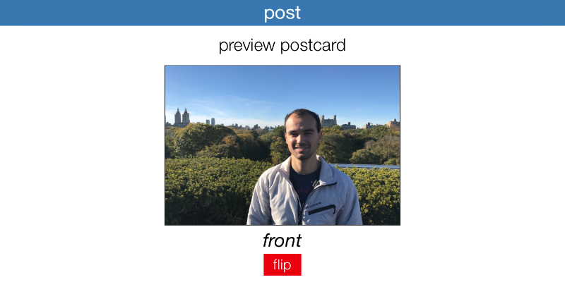
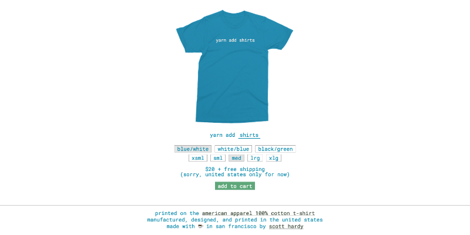
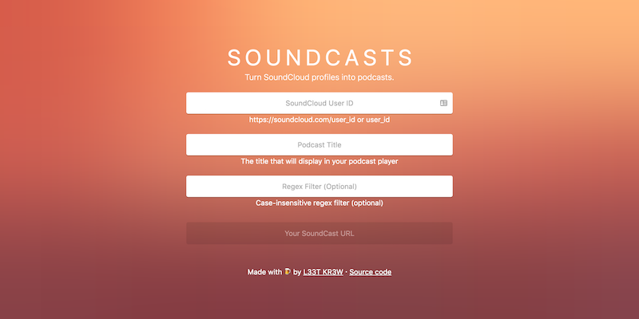
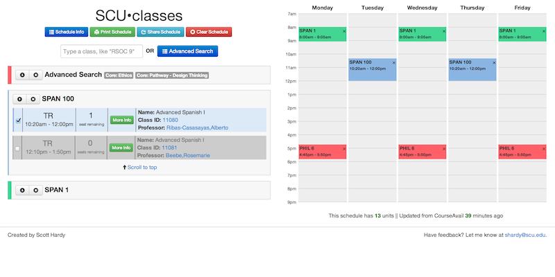
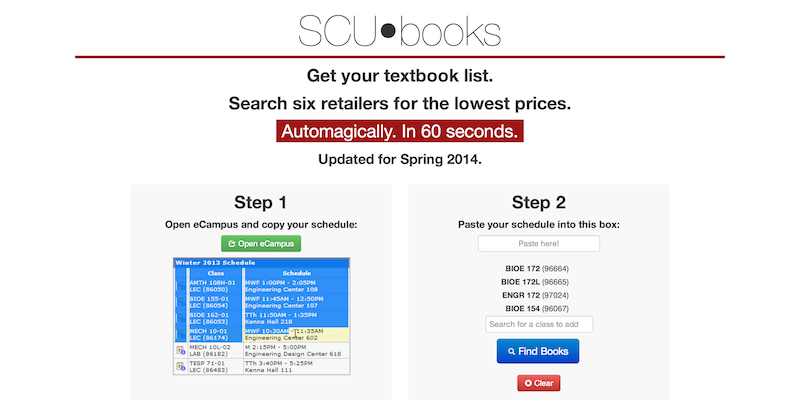

Here's a showcase of the projects I'm most proud of.

Games for speech-language pathologists to do therapy, remotely.
2020Vue.jsNode.jsVercel
Simple mobile webapp that directly calls the Lob.com API to mail postcards for under $1.
2016React/ReduxLob.com API
Website to order custom "yarn add pkg-name" shirts. Brutalist design with aggressively simple UX.
2016Cycle.jsStyletronNode.js
Turn SoundCloud profiles into RSS podcast feeds. Made with Ryan/Matt.
2015Node.jsCycle.js
A website for Santa Clara students to streamline class registration. Used by over 90% of students.
2012-2021Angular.jsRuby on RailsPostgreSQL
A website for Santa Clara students to save money on their textbooks. Personalized to each schedule.
2012-2018Angular.jsRuby on RailsPostgreSQL